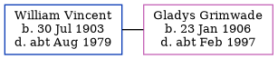

William Wallace Vincent 1903 - c1979
[ Home ] | [ Calendar ] | [ Surnames Index ] | [ Errors ] | [ Family History ]William Vincent, the husband of Gladys Millicent Grimwade (the third cousin twice-removed on the mother's side of Nigel Horne), was born on 30 Jul 19031,2. He married Gladys in Sheppey, Kent, England around Nov 19353. On 29 Sept 1939, he was living at 30 Council Houses, Chichester, Sussex, England1.
He died c. Aug 1979 in Chichester2.
Citations
- 1939 Register - Findmypast (was the head of the household)
- England & Wales deaths 1837-2007 - Findmypast
- England & Wales Marriages 1837-2005 - Findmypast
Media
1939 Register - TNA/R39/2617/2617D/015/07
England & Wales marriages 1837-2005 - BMD/M/1935/4/AZ/001353/104
England & Wales Deaths 1837-2007 - BMD/D/1979/3/AZ/001059/036
Family Tree
Map
Generated by ged2site. Last updated on Jul 3, 2024
Known Issues
Date of birth is known, but not place
No records of living with anyone